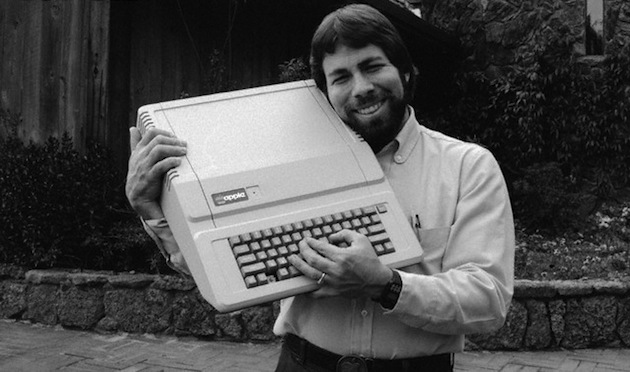

Stephan Gary Wozniak (Woz)
Co-Founder of Apple
 In 1975, Wozniak started developing the Apple into the computer that launched
Apple when he and Jobs first began marketing it the following year (1976).
A time line of Steve Wozniak's life
In 1975, Wozniak started developing the Apple into the computer that launched
Apple when he and Jobs first began marketing it the following year (1976).
Bill Fernandez.
eventually make him famous, the Apple I.
circuit board designs, and operating system for the computer.
personal computer with the ability to display color graphics, and BASIC programming language built in.
making Jobs and Wozniak both millionaires.
an annual public meeting, a typical situation that frustrated Wozniak.
that the company had "been going in the wrong direction for the last five years". He then sold most of his stock.